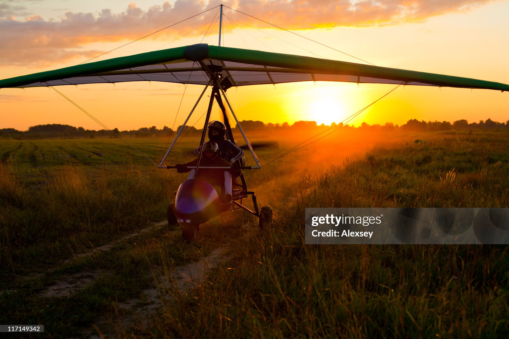
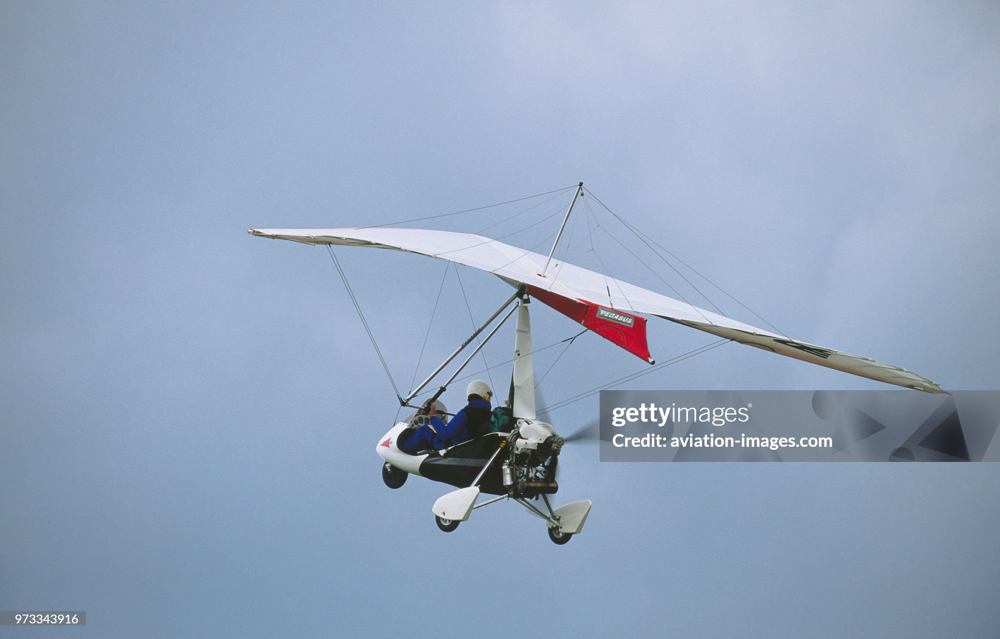
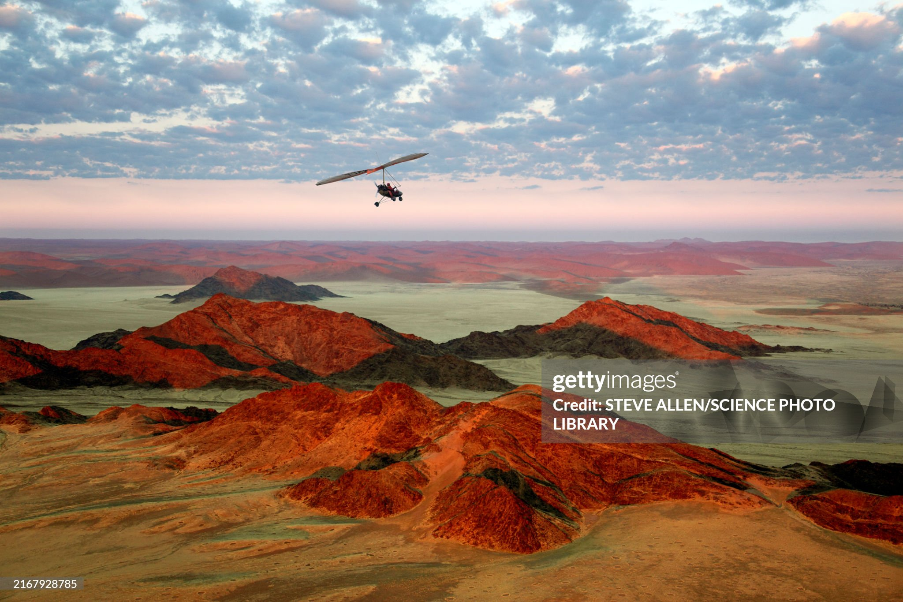
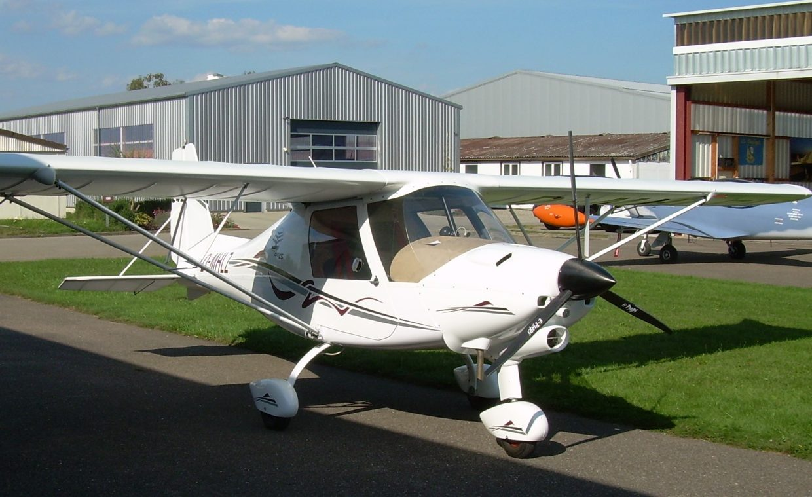
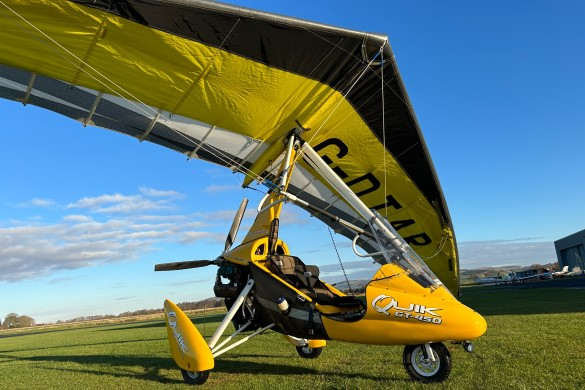

Microlighting in the UK
Microlighting offers a fun, affordable route into the world of recreational aviation. In the UK, you can choose from two main types:
Types of Microlight
Fixed Wing A mini airplane. 3 axis control using stick and rudder controls.

Flex Wing A powered hanglider, uses weightshift control. Akin to a motorcycle in the sky.
